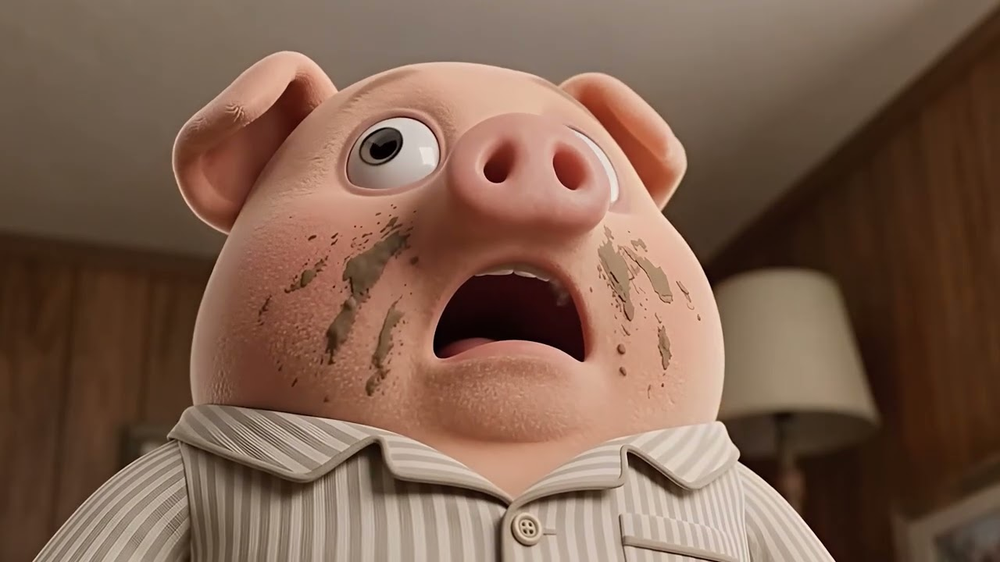

소재를 주제로 한 AI 영상 공모전 출품작입니다.
동화「아기돼지 삼형제」를 모티프로, 무거운 주제를 동화적 상상력으로 유쾌하게 재해석했습니다.
인기 유튜브 콘텐츠 "사나의 냉터뷰"를 주제로 제작한 모션그래픽 타이틀 시퀀스 제작 프로젝트입니다.
콘텐츠만의 개성을 살려 창의적인 오프닝으로 재해석했습니다.
기존 인기 유튜버의 편집 스타일을 분석하고 유사하게 재현해본 프로젝트입니다.
실제 작업은 아니지만, 특정 크리에이터의 편집 문법을 따라 만들며 전반적인 편집 실력을 다진 프로젝트입니다.
소재를 주제로 한 AI 영상 공모전 출품작입니다.
동화「아기돼지 삼형제」를 모티프로, 무거운 주제를 동화적 상상력으로 유쾌하게 재해석했습니다..

인기 유튜브 콘텐츠 "사나의 냉터뷰"를 주제로 제작한 모션그래픽 타이틀 시퀀스 제작 프로젝트입니다.
콘텐츠만의 개성을 살려 창의적인 오프닝으로 재해석했습니다.
기존 인기 유튜버의 편집 스타일을 분석하고 유사하게 재현해본 프로젝트입니다.
실제 작업은 아니지만, 특정 크리에이터의 편집 문법을 따라 만들며 전반적인 편집 실력을 다진 프로젝트입니다.